1. Kunde & Ziele
1.1 Kunde / Hintergrund
Unser Projekt ist ein Webshop für Sport-Supplements. Die Kunden an die sich dieser Shop richtet, sind primär junge, sportlich engagierte Menschen. Das Design und die Website-Navigation sind dementsprechend angepasst.
1.2 Zielsetzung
Die Anwendung soll die Produkte und den Kauf-Vorgang in den Vordergrund stellen und eine einfache Handhabung (UX) bieten. Der Kunde soll klare visuelle Feedbacks erhalten und immer genau wissen, wie er die Seite navigieren kann. Dies soll durch visuell ansprechende, klickbare Elemente geschehen. Damit die User Experience nicht eingeschränkt wird, sollen unnötige reloads der Seiten durch AJAX Methoden verhindert werden. Durch Kommunikation mit der Datenbank soll außerdem sichergestellt werden, dass die Bestellung des Users immer im Einklang mit dem Lagerbestand ist. Für die Administratoren des Shops soll ein Admin-Panel für ein einfaches Management über ein User Interface sorgen. Die Administration soll über drei Rollen User-Manager, Product-Manager und Admin erfolgen, die alle unterschiedliche Rechte haben. Der User selbst soll auch seine persönlichen Daten über einen persönlichen Bereich via UI einfach ändern und sein Profil selbst löschen können.
2. Recherche & Design
2.1 Recherche
Beim Design haben wir uns am allgemeinen Layout moderner Web-Shops orientiert. Das Layout der Homepage und Produktseiten wurde inspiriert von anderen Supplement-Shops wie esn.com
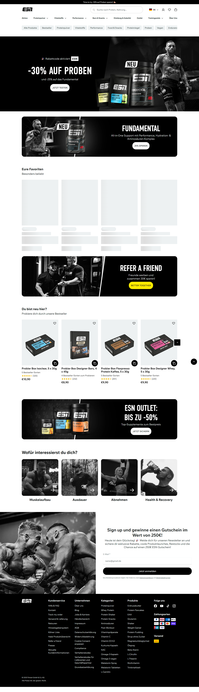 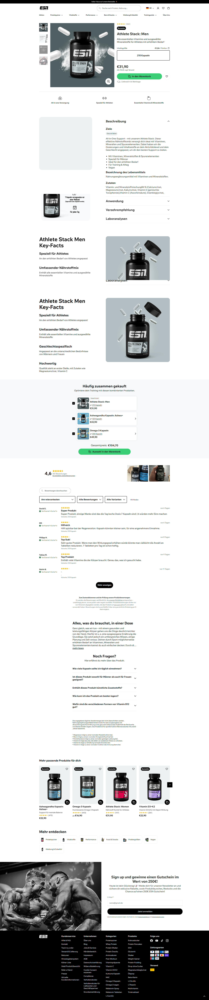2.2 Sitemap
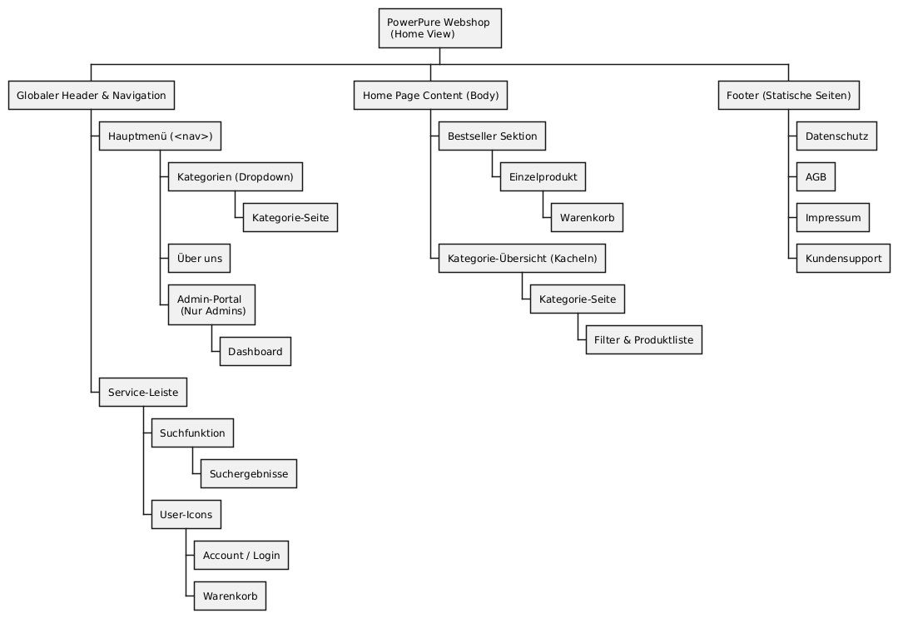2.3 Wireframes
Homepage
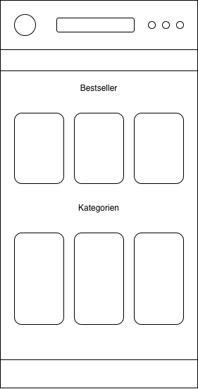Kategorie-Seite

Suchergebnis-Seite
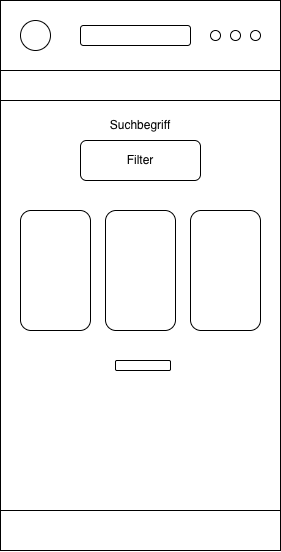Produkt-Seite

Login-Seite
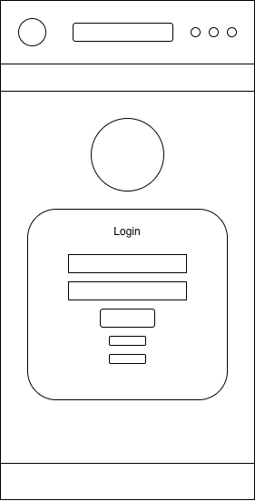Warenkorb-Seite
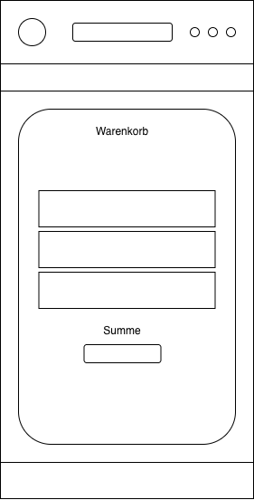Checkout-Seite
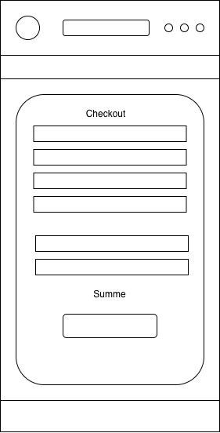Admin-Seite
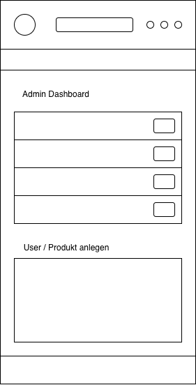Profil-Seite
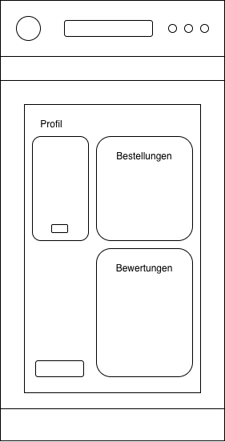3. Daten- & Rollenmodell
3.1 Rollenmodell (RBAC – Role-Based Access Control)
Datenbank-Struktur (RBAC-Tabellen)
Roles(role_id, role_name)-
Permissions(permission_id, permission_key, permission_description) -
User_Roles(user_id, role_id)→ Zuordnung User ↔ Rolle (n:m) -
Role_Permissions(role_id, permission_id)→ Zuordnung Rolle ↔ Permission (n:m)
Effektive Rechte eines Users ergeben sich aus der Join-Kette:
Users → User_Roles → Roles → Role_Permissions → Permissions
Rollen
Rolle: user
product.read(Produkte ansehen)order.read(Bestellungen ansehen)cart.manage(Warenkorb verwalten)rating.create(Bewertungen erstellen)
Rolle: product_manager
product.readproduct.create(Produkte anlegen)product.update(Produkte bearbeiten)product.delete(Produkte löschen)category.manage(Kategorien verwalten)
Rolle: user_manager
user.read(Benutzer ansehen)user.create(Benutzer anlegen)user.update(Benutzer bearbeiten)user.delete(Benutzer löschen)order.readorder.update_state(Bestellstatus ändern)role.assign(Rollen zuweisen)
Rolle: admin
-
alle Permissions inkl.
system.admin(Alle Rechte)
Technische Umsetzung im Projekt
-
Laden der Berechtigungen beim Login
Beim Login werden die Permissions über einen SQL-Join geladen (UserModel::getPermissionsByUserId) und als Array in der Session gespeichert:-
$_SESSION['user']enthält Basisdaten (id, name, email) -
$_SESSION['permissions']enthält alle Permission-Keys (Strings)
-
-
Zentrale Permission-Prüfung
Es gibt eine Hilfsfunktion:-
hasPermission('permission.key')→ prüft, ob der Key in$_SESSION['permissions']enthalten ist.
-
-
Zugriffsschutz auf Controller-Ebene
-
requireLogin()blockiert nicht eingeloggte Nutzer (bei AJAX/POST mit JSON-Fehler + 401, sonst Redirect). -
denyAccessUnlessGranted('permission.key')gibt bei fehlender Berechtigung 403 zurück (bei AJAX als JSON, sonst Textausgabe).
Beispiel: Im AdminController verlangt z. B./admin/usersdie Permissionuser.read. -
-
UI/Navigation abhängig von Permissions
Im Header wird z. B. der Link zur Adminpage nur angezeigt, wenn der User eine passende Permission hat (category.manageoderrole.assignodersystem.admin). Admin-Funktionen sind dadurch auffindbar, aber serverseitig trotzdem abgesichert. -
Rollenvergabe
- Standardrolle ist
user. -
Rollen können im Admin-Bereich nur vergeben werden, wenn der
eingeloggte Nutzer
role.assign(odersystem.admin) besitzt.
- Standardrolle ist
Rollenmatrix (Rolle × Permission)
| Permission | user | product_manager | user_manager | admin |
|---|---|---|---|---|
product.read |
✅ | ✅ | ✅ | |
product.create |
✅ | ✅ | ||
product.update |
✅ | ✅ | ||
product.delete |
✅ | ✅ | ||
category.manage |
✅ | ✅ | ||
cart.manage |
✅ | ✅ | ||
order.read |
✅ | ✅ | ✅ | |
order.update_state |
✅ | ✅ | ||
rating.create |
✅ | ✅ | ||
user.read |
✅ | ✅ | ||
user.create |
✅ | ✅ | ||
user.update |
✅ | ✅ | ||
user.delete |
✅ | ✅ | ||
role.assign |
✅ | ✅ | ||
system.admin |
✅ |
Hinweis: admin besitzt alle Rechte
(inkl. system.admin). Standardnutzer erhalten die Rolle
user.
3.2 Relationales Modell
Beschreibung des relationalen Modells:
Das Schema trennt die Daten in die Bereiche Katalog,
Benutzer/Adressen, Warenkorb,
Bestellungen, Bewertungen und
Rollen/Rechte (RBAC). Produkte sind einer Kategorie
zugeordnet (Categories 1:n Products). Der Warenkorb
ist als n:m-Beziehung zwischen
Users und Products über die Tabelle
Cart modelliert, wobei
product_amount die Menge speichert. Bestellungen bestehen
aus einem Bestellkopf (Orders) und Positionen
(OrderItems, PK aus order_id +
product_id), wodurch sich eine
1:n-Beziehung von Orders zu OrderItems ergibt; ein
Produkt kann entsprechend in vielen Bestellpositionen vorkommen.
Orders.user_id ist optional, um
Gastbestellungen ohne Account zu ermöglichen.
Lieferadressen werden pro Bestellung in
Order_Addresses als
Snapshot gespeichert, damit historische Bestellungen
auch bei späteren Profiländerungen korrekt bleiben. Bewertungen werden
über Ratings als Beziehung zwischen Users und
Products gespeichert. Das Rollen- und Rechtesystem ist relational über
Zwischentabellen umgesetzt:
Users n:m Roles (User_Roles) und
Roles n:m Permissions
(Role_Permissions). Zusätzlich sind wichtige
Eindeutigkeiten (z. B.
Users.email, password_resets.token) im
Schema als UNIQUE-Constraints hinterlegt.
4. Technische Architektur
4.1 MVC Architektur

4.2 Request Flow
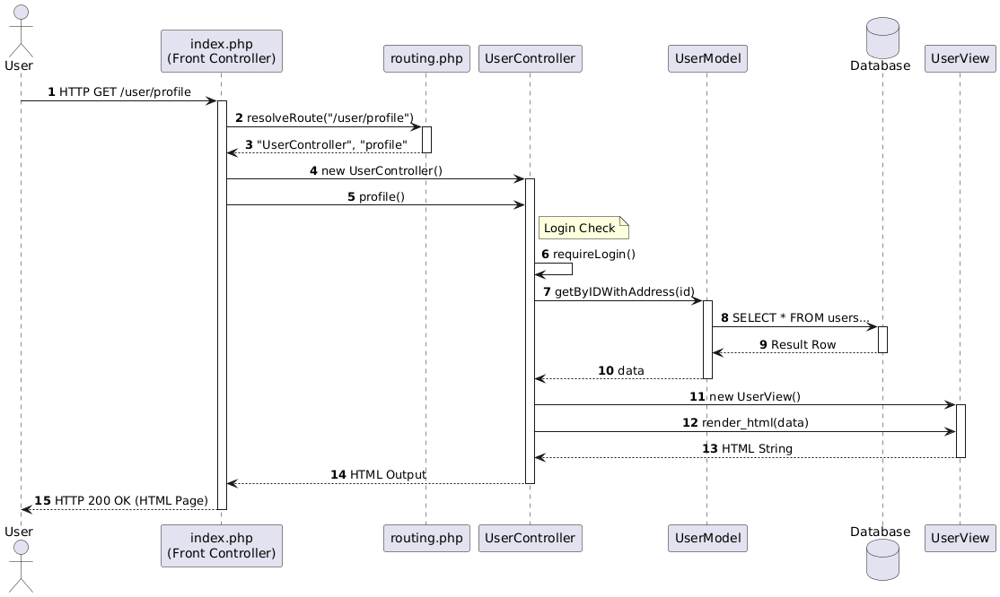4.3 Ordnerstruktur
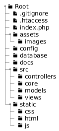
Die Anwendung folgt einer strikten Trennung nach dem MVC-Prinzip
(Model-View-Controller).
Alle logischen Kernkomponenten sind im Verzeichnis src/ gekapselt, während öffentliche
Ressourcen sauber getrennt unter static/ und assets/ liegen.
- src/controllers/: Beinhaltet die Steuerungslogik. Die Controller verarbeiten Benutzereingaben, prüfen Berechtigungen und koordinieren das Zusammenspiel zwischen Model und View. Beispiele: Controller.php (Basisklasse), HomeController.php, UserController.php.
-
src/models/: Verantwortlich für die Geschäftslogik und die Kommunikation mit der
Datenbank (
sport_shop.sql). Beispiele: Model.php (Basisklasse), UserModel.php, ProductModel.php. -
src/views/: Enthält die Templates und die Logik für die HTML-Ausgabe.
Beispiele: MainView.php, CartView.php, HomeView.php.
- src/views/layouts/: Enthält globale, wiederverwendbare Elemente wie
head.php.
- src/views/layouts/: Enthält globale, wiederverwendbare Elemente wie
- assets/: Zentraler Ort für Medienressourcen wie Produktbilder und Videos.
- config/: Beinhaltet die zentrale Konfiguration der Anwendung (z. B. Datenbankzugangsdaten).
- static/: Speichert öffentlich zugängliche Ressourcen wie CSS-Stylesheets und JavaScript-Dateien.
-
Root-Verzeichnis/:
index.php: Der zentrale Einstiegspunkt (Front-Controller) der Anwendung.routing.php: Definiert die Navigationspfade und ordnet URLs über Regular Expressions den entsprechenden Controllern zu..htaccess: Apache-Konfiguration zur Ermöglichung von "Pretty URLs" (Rewriting).
4.4 Exemplarische Routen & Use-Cases
Anhand der folgenden zwei Beispiele wird verdeutlicht, wie das System Anfragen verarbeitet und wie Frontend und Backend via AJAX kommunizieren.
Use-Case 1: Produktdetailseite aufrufen (Synchroner Request)
Dieser Pfad zeigt die Auflösung einer "Pretty URL" und das Laden von Daten aus der Datenbank.
URL: http://localhost/.../product/show/12
- Routing: Die
routing.phpnutztpreg_match, um den Pfad zu zerlegen (Controller: Product, Action: show, Parameter: 12). - Controller (ProductController.php): Die Methode
show()wird aufgerufen. Sie validiert die ID und delegiert die Datenbeschaffung an das Model. - Model (ProductModel.php): Führt ein
SELECTmit Prepared Statements auf der TabelleProductsaus. - View (ProductView.php): Die Methode
detail($data)rendert das HTML. Hier wird bereits die JavaScript-Logik (cart.js) für spätere Interaktionen eingebunden.
Use-Case 2: Produkt in den Warenkorb legen (AJAX-Interaktion)
| Nutzer-Aktion / Rolle | Kunde fügt Artikel zum Warenkorb hinzu. Rollenprüfung via
denyAccessUnlessGranted('cart.manage').
|
|---|---|
| Route & Action | POST /cart/add (verarbeitet in CartController::add) |
| DB-Tabellen / CRUD | Tabelle: Products (Read für Stock-Check). Speicherung erfolgt vorerst in
$_SESSION['cart'] (Persistent-Sync beim Logout).
|
| Validierung (Server) |
1. requireLogin(): Ist der User angemeldet?2. checkStockLimit(): Ist die gewünschte Menge verfügbar?
|
| Frontend Event | click-Event auf den Button .add-to-cart-btn (in
cart.js).
|
| AJAX & Daten |
Input (JSON): { "product_id": 12, "product_amount": 1 }Output (JSON): { "success": true, "cartTotal": 45.99, "cartAmount": 3 }
|
| Fehlerfall / Feedback |
Bei Bestandunterschreitung: success: false. JavaScript zeigt Fehlermeldung
(Alert/DOM-Inject).Bei Erfolg: Dynamisches Update des Warenkorb-Counters ohne Seiten-Reload. |
5. Ablauflogik
5.1 Übersicht der Flussbilder (Dateneingabe)
Die folgenden Flowcharts dokumentieren alle relevanten Dateneingabe- und Änderungsprozesse im Projekt (Formular/AJAX → Validierung → DB-Operation → Feedback/Redirect bzw. JSON-Response).
Enthaltene Flussbilder (Routen/Endpoints)
user/registeruser/loginuser/forgotPassworduser/resetPassworduser/updateUseruser/deleteAccountcart/add(AJAX)cart/remove(AJAX)-
order/checkout+order/placeOrder→ (success/error) rating/storeadmin/userCreateadmin/userUpdateadmin/userDeleteadmin/productCreateadmin/productUpdateadmin/productDeleteproduct/processSearch(AJAX Autocomplete)*/ajaxFilter(Filter + Load More, AJAX)
- Existiert im Controller
- Wird im UI nicht verwendet („never used“)
- Kein Permission-Key vorhanden (
rating.delete)
rating/remove), wird im UI jedoch nicht angeboten und
ist mangels Permission rating.delete aktuell nicht
ausführbar.
Nummerierte Übersicht (Kapitelreihenfolge der Diagramme)
- Registrierung (
user/register) - Login + Warenkorb-Merge (
user/login) - Passwort vergessen (
user/forgotPassword) - Passwort zurücksetzen (
user/resetPassword) - Profil bearbeiten (
user/updateUser) - Account löschen (
user/deleteAccount) - Warenkorb: Produkt hinzufügen (AJAX –
cart/add) -
Warenkorb: Produkt entfernen (AJAX –
cart/remove) -
Order: Checkout + placeOrder + success/error
(
order/checkout,order/placeOrder) - Bewertung erstellen (
rating/store) - Admin: User anlegen (
admin/userCreate) - Admin: User bearbeiten (
admin/userUpdate) - Admin: User löschen (
admin/userDelete) - Admin: Produkt anlegen (
admin/productCreate) - Admin: Produkt bearbeiten (
admin/productUpdate) - Admin: Produkt löschen (
admin/productDelete) -
Suche (AJAX Autocomplete) (
product/processSearch) - Filter + Load More (AJAX) (
*/ajaxFilter)
Flow 1: Registrierung
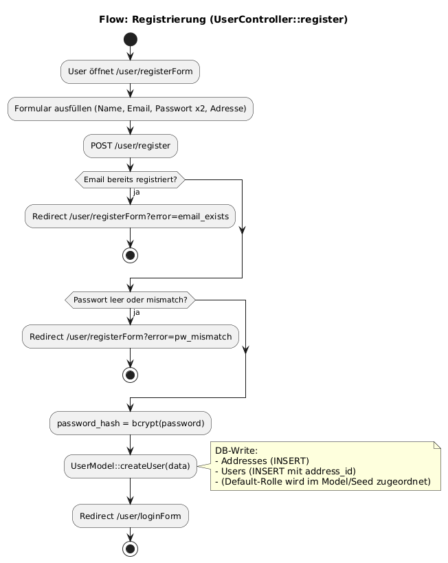Flow 2: Login – Warenkorb-Merge
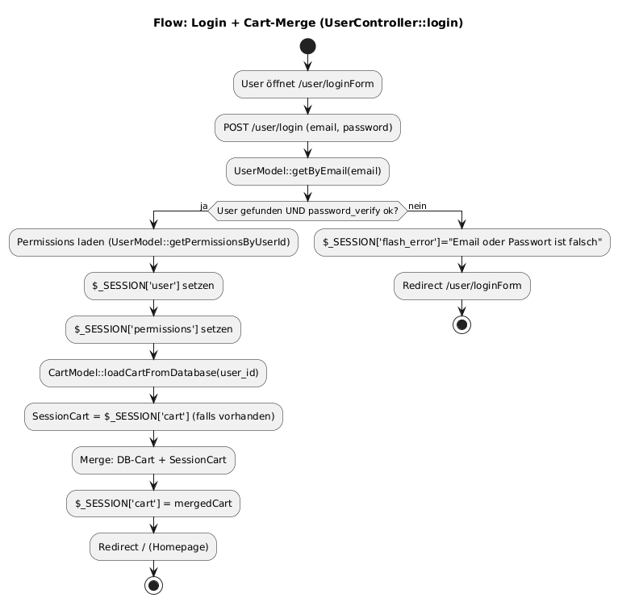Flow 3: Passwort vergessen
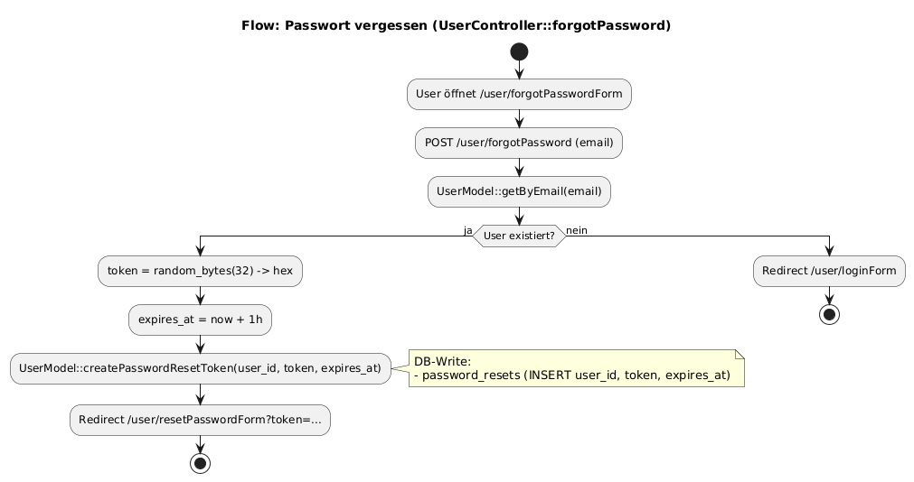Flow 4: Passwort zurücksetzen
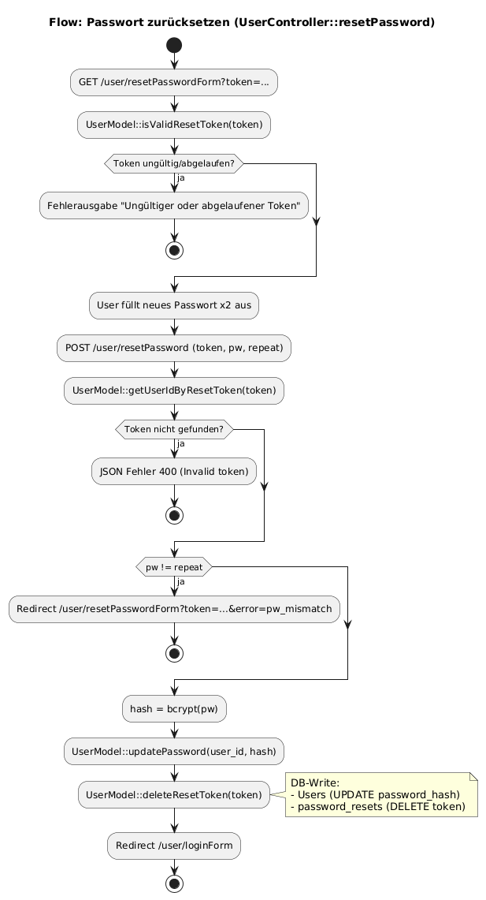Flow 5: Profil bearbeiten
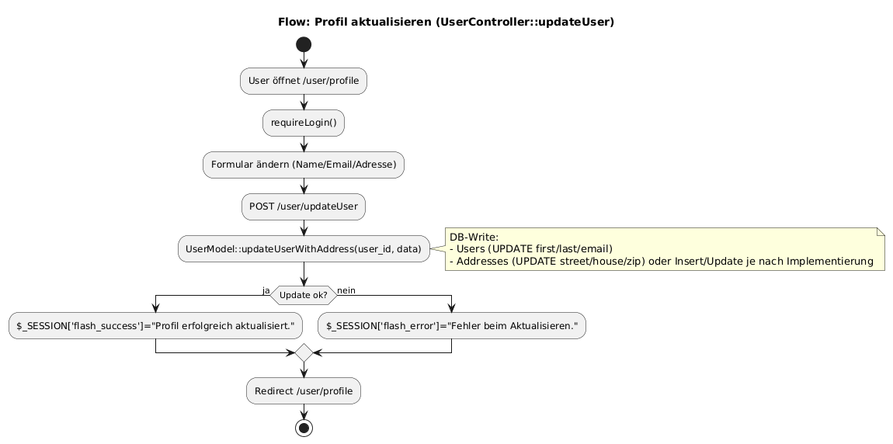Flow 6: Account löschen
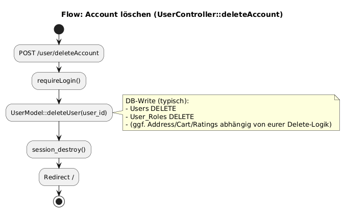Flow 7: Warenkorb – Produkt hinzufügen (AJAX)
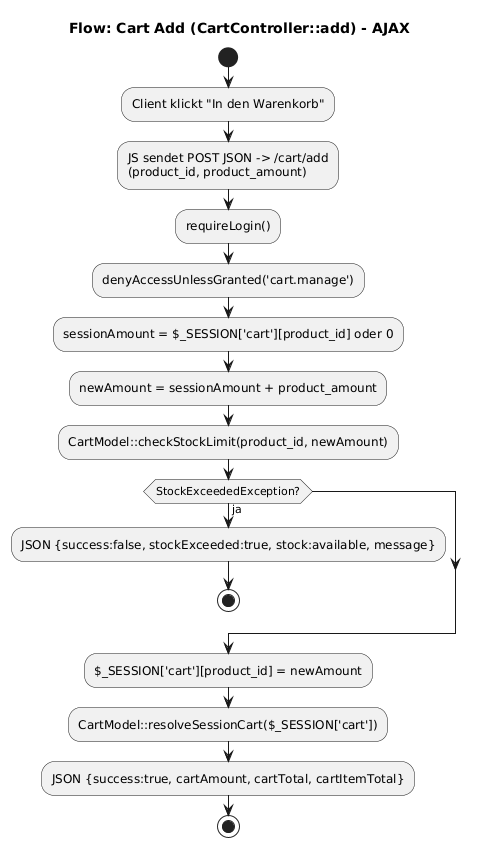Flow 8: Warenkorb – Produkt entfernen (AJAX)
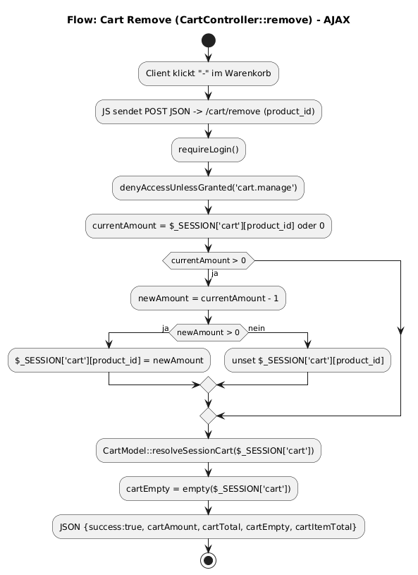Flow 9: Order – Checkout + placeOrder + success/error
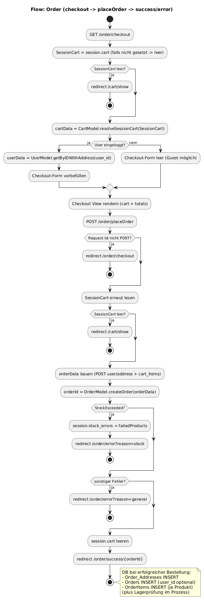Flow 10: Bewertung erstellen
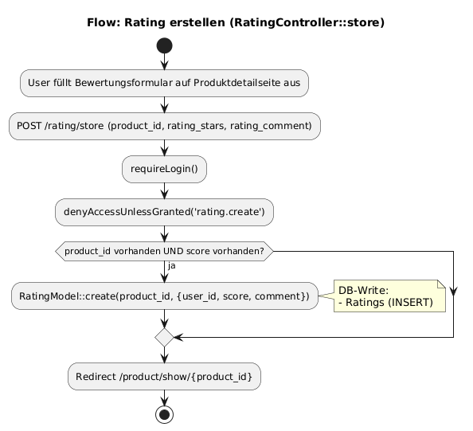Flow 11: Admin – User anlegen
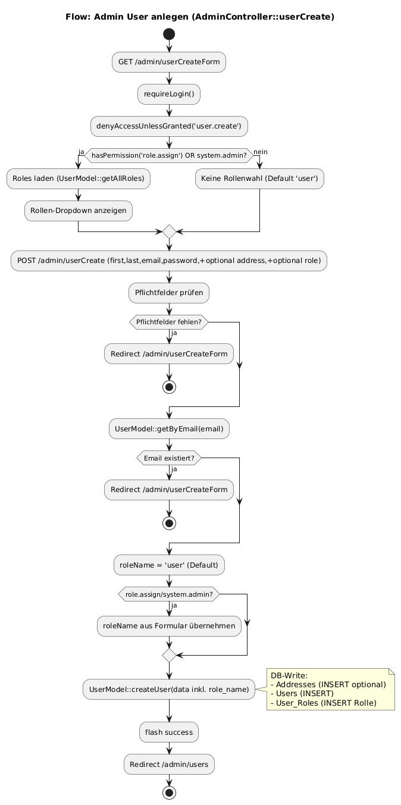Flow 12: Admin – User bearbeiten
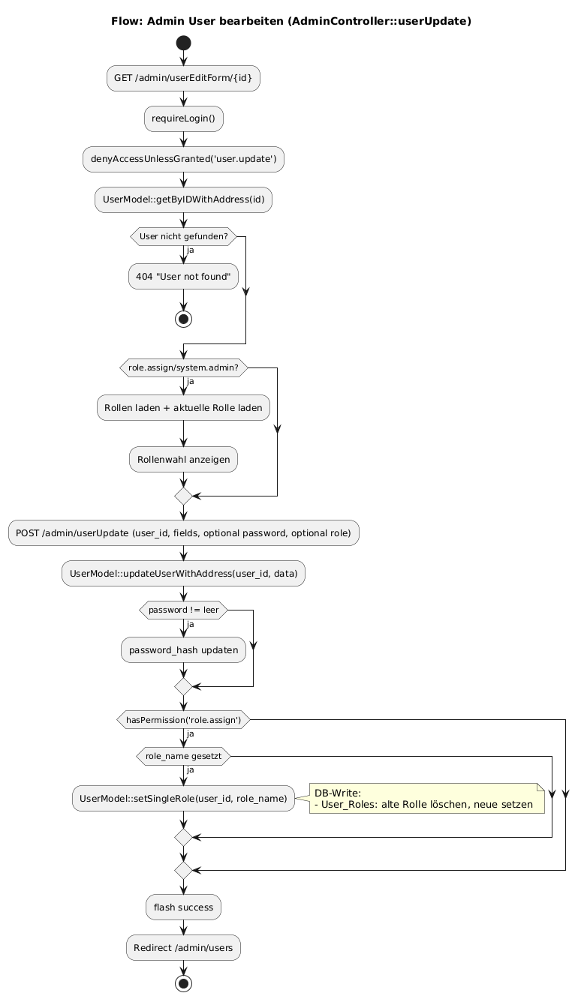Flow 13: Admin – User löschen
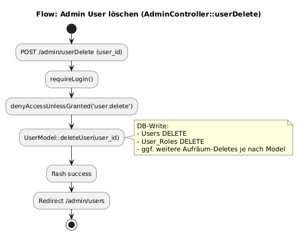Flow 14: Admin – Produkt anlegen
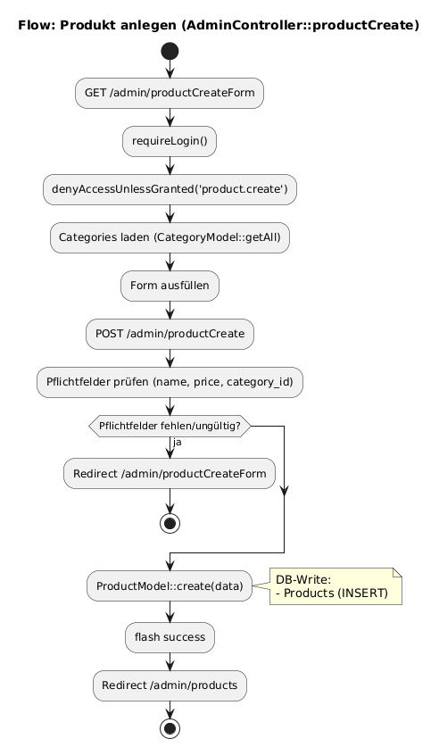Flow 15: Admin – Produkt bearbeiten
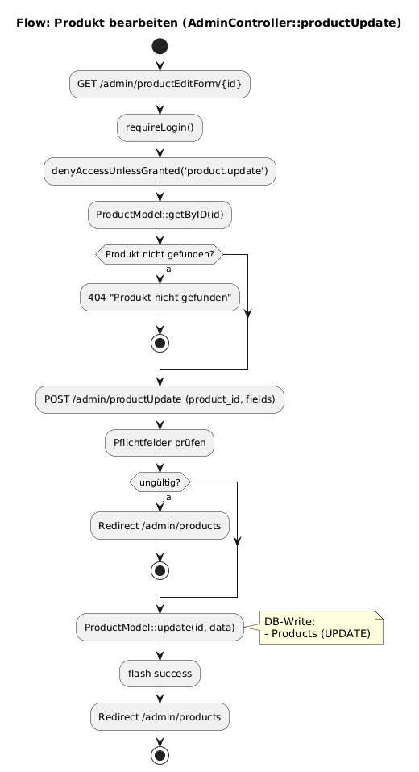Flow 16: Admin – Produkt löschen
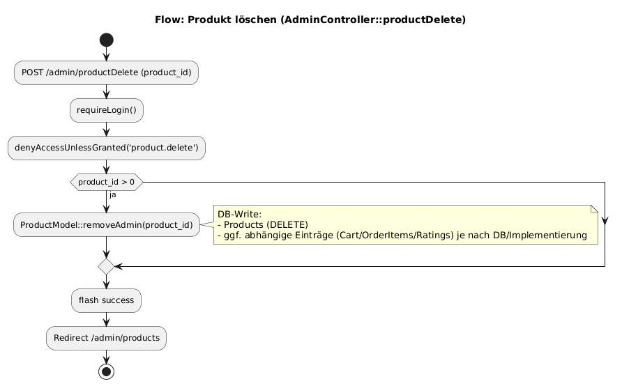Flow 17: Suche – AJAX Autocomplete
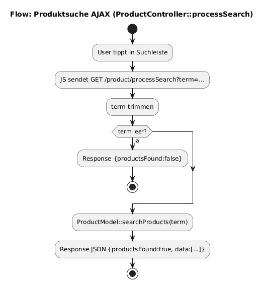 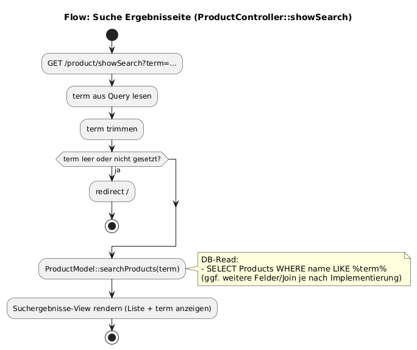Flow 18: Filter + Load More (AJAX)
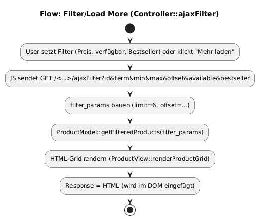6. Funktionen & Frontend-Interaktionen
Feature: Globale Live-Suche (Header)
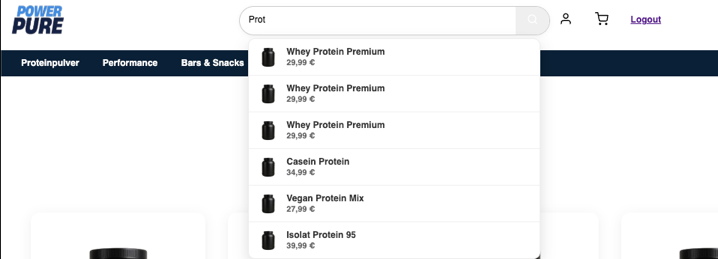| Use Case / Rolle | Nutzer sucht artikelübergreifend nach Produkten. Die Live-Vorschau ermöglicht schnelles
Finden ohne
Seiten-Reload. Rolle: Alle Besucher (Gäste & Kunden). |
|---|---|
| Route & Action | /product/processSearch (ProductController::processSearch) |
| DB-Tabellen / CRUD | Tabelle: Products (Operation: READ) Query: SELECT product_id, asset_path, product_name, price FROM Products WHERE product_name LIKE :term LIMIT 6 |
| Validierung (Server) |
- trim() des Suchbegriffs.- Verwendung von Prepared Statements ( LIKE :placeholder) gegen
SQL-Injection.
|
| Frontend Event | input-Event auf #live-search-input mit einem 300ms
Debounce-Timer zur Server-Entlastung. |
| AJAX & Daten |
Input (GET): ?term=Prot (Header:
X-Requested-With: XMLHttpRequest)Output (JSON): { "productsFound": true, "data": [...] }
|
| Fehlerfall / Feedback |
Keine Treffer: Server sendet data: []. Das Frontend
rendert
die Nachricht
"Keine Produkte gefunden" direkt in das Dropdown.Netzwerkfehler: Abgefangen durch try-catch im JS;
Fehlermeldung in der
Konsole.
|
Feature: Produktverwaltung (Anlegen)
 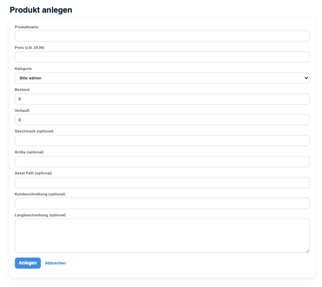
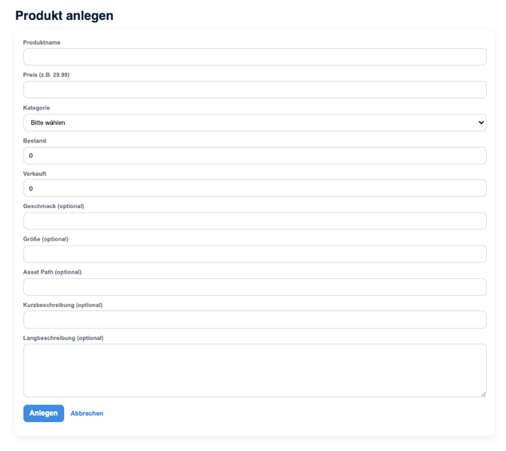
| Use Case / Rolle | Administrator legt ein neues Produkt im Sortiment an. Rolle: Administrator (Recht: product.create).
|
|---|---|
| Route & Action | POST /product/store (ProductController::store) |
| DB-Tabellen / CRUD | Tabelle: Products (Operation: CREATE / INSERT) Ausführung in ProductModel::create($data).
|
| Validierung (Server) |
- RBAC: denyAccessUnlessGranted('product.create').- Datentypen: PDO-Binding stellt korrekte Typen für price
(Decimal) und IDs
sicher.
|
| Frontend Event | Standard HTML Form-Submit (Button type="submit"). |
| AJAX & Daten | Kein AJAX (Synchroner POST-Request). Input: Form-Daten (product_name, price, category_id, etc.). |
| Fehlerfall / Feedback |
- Berechtigung fehlt: HTTP 403 (JSON-Error bei POST). - DB-Fehler: try/catch fängt PDOExceptions ab (z.B.
FK-Verletzung bei
category_id) und gibt Fehlermeldung aus.
|
Feature: Produktverwaltung (Bearbeiten)
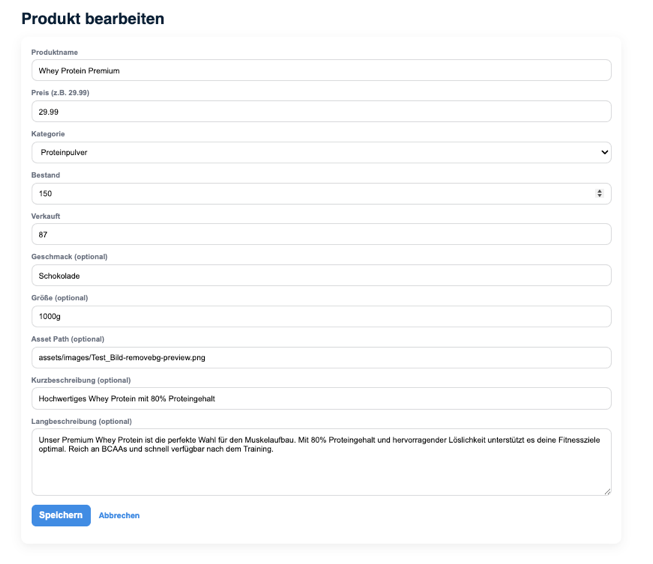| Use Case / Rolle | Bestehende Produktdaten (Preis, Bestand, Beschreibung) werden aktualisiert. Rolle: Admin (Recht: product.update).
|
|---|---|
| Route & Action | GET /admin/productEditForm/{id} (Anzeige) POST /admin/productUpdate
(Verarbeitung)
|
| DB-Tabellen / CRUD | Tabelle: Products (Operation: UPDATE) Methode: ProductModel::update(int $id, array $data).
|
| Validierung (Server) |
- Prüfung auf Pflichtfelder (Name, Preis, Category, Inventory). - Optionale Felder werden via bindOptional() als STR oder NULL gebunden.
|
| Fehlerfall / Feedback |
- 404 Not Found: Falls die Produkt-ID nicht existiert. - Redirect: Bei leeren Pflichtfeldern erfolgt ein Redirect auf die Liste ohne Update. |
Feature: Produktverwaltung (Löschen)
| Use Case / Rolle | Ein Produkt wird dauerhaft aus dem Sortiment entfernt. Rolle: Admin (Recht: product.delete).
|
|---|---|
| Route & Action | POST /admin/productDelete (AdminController::productDelete) |
| DB-Tabellen / CRUD | Tabelle: Products (Operation: DELETE) Methode: ProductModel::remove($id).
|
| Validierung (Server) |
- Nur POST-Requests zulässig (Schutz vor versehentlichem Löschen via
Link). - id > 0 Prüfung.
|
| Fehlerfall / Feedback |
- Erfolg: Setzen eines Flash-Messages ("Produkt wurde gelöscht") und
Redirect zur
Übersicht. - Sicherheit: Nicht-Admins erhalten HTTP 403. |
Feature: Produkt zum Warenkorb hinzufügen (AJAX)
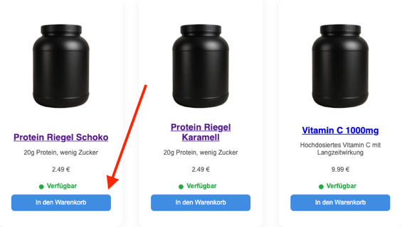 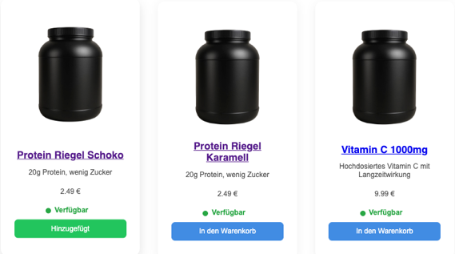| Use Case / Rolle | Ein eingeloggter Nutzer fügt eine bestimmte Menge eines Produkts dem Warenkorb hinzu.
Rolle: Eingeloggter User mit Recht cart.manage.
|
|---|---|
| Route & Action | POST /cart/add (CartController::add) |
| DB-Tabellen / CRUD | Tabelle: Products (Read für Bestand-Check). Speicherung: Lokal in der Session ( $_SESSION['cart']).
|
| Validierung (Server) |
- requireLogin() & denyAccessUnlessGranted('cart.manage').- checkStockLimit(): Prüft die Zielmenge gegen den verfügbaren Lagerbestand
(inventory).
|
| Frontend Event | click-Event auf den "In den Warenkorb"-Button (verarbeitet in
cart.js).
|
| AJAX & Daten |
Input (JSON/POST):
{ "product_id": 12, "product_amount": 2 }Output (JSON): { "success": true, "cartAmount": 5, "cartTotal": 120.50, ... }
|
| Fehlerfall / Feedback |
- Bestand unterschritten: StockExceededException wird
gefangen
->
JSON-Antwort mit success: false und Lager-Info.- Nicht POST: Fehlermeldung via JSON. |
Feature: Bestellung abschließen (Checkout)
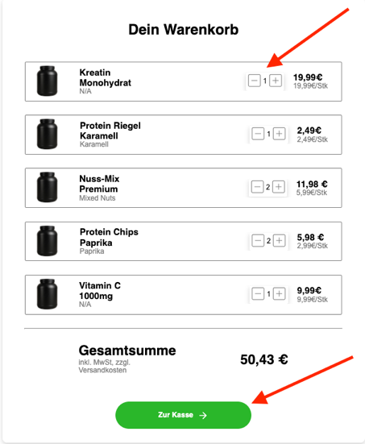| Use Case / Rolle | Der Nutzer schließt seinen Einkauf ab und wandelt den Session-Warenkorb in eine
persistente
Bestellung
um. Rolle: Jeder (inkl. Gast-Checkout). Eingeloggte User werden via ID verknüpft. |
|---|---|
| Route & Action | POST /order/placeOrder (OrderController::placeOrder)
Erfolg: GET /order/success/{id}
(OrderController::success) Fehler: GET /order/error (OrderController::error)
|
| DB-Tabellen / CRUD | Tabellen: Orders, Order_Items, Addresses
(Operation:
CREATE / INSERT).
|
| Validierung (Server) |
- Prüfung auf leeren Warenkorb. - Validierung der Adressdaten (Straße, Hausnummer, PLZ). - Erneuter StockExceeded Check beim finalen Speichern.
|
| Frontend Event | Standard Form-Submit des Checkout-Formulars. |
| AJAX & Daten | Kein AJAX (Synchroner POST-Request mit Redirects). |
| Fehlerfall / Feedback |
- Bestandsproblem: Redirect auf /order/error?reason=stock
(Fehler werden in
$_SESSION['stock_errors'] zwischengespeichert).- Erfolg: Warenkorb-Session wird geleert; Redirect auf /order/success/{id}.
|
Feature: Dynamischer Produkt-Filter & Pagination
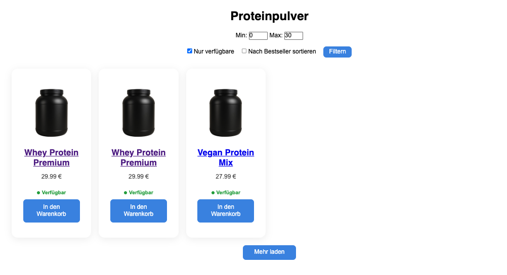| Use Case / Rolle | Nutzer können die Produktliste nach Preis, Kategorie, Verfügbarkeit und Beliebtheit
filtern,
ohne die
Seite neu zu laden. Rolle: Alle Besucher (Gäste & Kunden). |
|---|---|
| Route & Action | GET /{controller}/ajaxFilter[/{id}] (verarbeitet in
Controller::ajaxFilter)
|
| DB-Tabellen / CRUD | Tabelle: Products (Operation: READ) Dynamische Query: Nutzt WHERE-Klauseln für Preisrange,
Kategorie-ID,
Keyword-Matching (LIKE) und Bestandsprüfung (inventory > 0).
|
| Validierung (Server) |
- Prepared Statements: Alle Parameter werden via PDO gebunden (Schutz
vor
SQL-Injection). - Datentypen: Explizite Bindung von LIMIT und
OFFSET als
PDO::PARAM_INT.- Defaults: Controller setzt Standardwerte für Preis (0 - 9999) und Pagination, falls Parameter fehlen. |
| Frontend Event | change- oder click-Events auf Filter-Elementen (Preis-Slider,
Checkboxen) in
filter.js.
|
| AJAX & Daten |
Input (GET): Parameter wie
min, max, available, bestseller, offset, term.Output (HTML): Der Server liefert ein fertiges HTML-Snippet des Produkt-Grids (gerendert durch ProductView::renderProductGrid).
|
| Fehlerfall / Feedback |
- Keine Treffer: Das Grid bleibt leer; der "Mehr laden"-Button wird
automatisch
ausgeblendet. - Pagination: Bei "Mehr laden" wird das neue HTML-Snippet asynchron an die bestehende Liste angehängt. |
Feature: Produkt-Bewertungen & Sterne-Rating
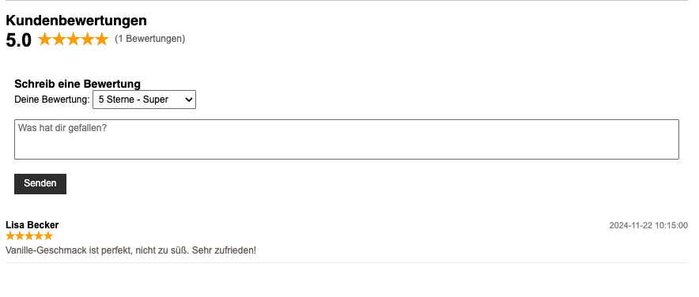| Use Case / Rolle | Kunden können gekaufte Produkte mit 1-5 Sternen und einem optionalen Kommentar bewerten.
Rolle: Eingeloggter User (Recht: rating.create).
|
|---|---|
| Route & Action | POST /rating/store (RatingController::store) |
| DB-Tabellen / CRUD | Tabelle: Ratings (Operation: CREATE / INSERT). Zusätzlich READ-Operationen mit Aggregaten ( AVG,
COUNT) für die
Sterne-Anzeige.
|
| Validierung (Server) |
- Deduplizierung: Vor dem Insert prüft das Model, ob für die
Kombination
user_id und product_id bereits eine Bewertung existiert.- Integrität: Prüfung auf Vorhandensein von product_id und
rating_score.- Sicherheit: requireLogin() und RBAC-Check
rating.create.
|
| Frontend-Anzeige | Die Anzeige erfolgt synchron beim Laden der Produktdetailseite. Der
ProductController fordert die aggregierten Scores sowie die Liste der
Kommentare (via
LEFT JOIN Users) direkt vom RatingModel an.
|
| Fehlerfall / Feedback |
- Falls bereits bewertet wurde, wird kein Duplikat angelegt (stilles Ignorieren oder
Redirect). - Fehlende Berechtigung führt zu einem HTTP 403 Forbidden. |
7. Projektmanagement & KI
7.1 KI-Unterstützung
Im Projekt wurde KI nur punktuell als Unterstützung genutzt (z. B. für Formulierungen, Debugging-Hinweise und kleine Code-Snippets). Architektur, Datenmodell, Routing, Controller-Logik und Datenbankzugriffe wurden von uns selbst umgesetzt und getestet. Es wurden keine kompletten Features „vollständig durch KI generiert“ übernommen, sondern Vorschläge nur nach eigener Prüfung angepasst.
Beispiel-Prompts (repräsentativ, nicht vollständig):
- „Erkläre mir, warum meine PHP-Session im Warenkorb nicht aktualisiert wird, und nenne typische Fehlerquellen.“
- „Wie kann ich in PHP PDO prepared statements korrekt für LIKE-Suche verwenden?“
- „Formuliere eine kurze technische Dokumentation für RBAC (Rollen/Rechte) anhand folgender Tabellen …“
7.2 Projektmanagement
Ziel und Vorgehen
Ziel war die Entwicklung eines funktionsfähigen Webshops im Modul DWP mit MVC-Architektur, Datenbankanbindung, RBAC (Rollen & Permissions) sowie dynamischen Funktionen (AJAX, Filter/Suche, Checkout). Wir möchten eine Team-Bewertung; die Umsetzung war durch gemeinsame Basisarbeit und gegenseitige Abhängigkeiten der Module stark verzahnt.
Aufwand (Zeitaufwand / Semester)
Da wir zu Beginn Anfänger in PHP/JavaScript/MVC waren, ist ein großer Teil der Zeit in Einarbeitung (Tutorials, Dokumentation, Debugging) geflossen.
- Aufwand pro Person: ca. 90 Stunden (inkl. Tutorials/Einarbeitung)
- Teamaufwand gesamt (3 Personen): ca. 270 Stunden
Grobe Aufteilung (Teamstunden)
| Arbeitspaket | Aufwand |
|---|---|
| Einarbeitung & Recherche (Tutorials, MVC/PHP/JS, PDO) | ~ 60 h |
| Architektur/MVC-Grundgerüst | ~ 45 h |
| Produkt-Modul (als gemeinsamer Referenz-Use-Case) | ~ 35 h |
| Module parallel (User, Cart/AJAX, Order, Admin, Rating) | ~ 80 h |
| Suche/Filter/Load-more + Autocomplete | ~ 20 h |
| Testen/Bugfixing/Polishing | ~ 20 h |
| Dokumentation (Diagramme, Flows, Texte) | ~ 10 h |
| Summe | ~ 270 h |
Zusammenarbeit & Qualitätssicherung
- Regelmäßige kurze Absprachen zu Architektur/Routes/DB-Struktur
-
Gemeinsame Konventionen: konsistente Routen, Session-Struktur
(
$_SESSION['user'],$_SESSION['permissions'],$_SESSION['cart']) - Gegenseitiges Testen neuer Features (insb. RBAC, AJAX-Endpoints, Checkout)
- Fokus auf „funktional und nachvollziehbar“ statt optischem Feinschliff (zeitbedingt)
8. Reflexion
Vorgehen und Lernkurve (wie wir gearbeitet haben)
Zu Beginn hatten wir wenig Erfahrung mit PHP, JavaScript und dem MVC-Pattern. Deshalb haben wir als erstes gemeinsam ein MVC-Grundgerüst aufgebaut, um eine saubere Struktur zu schaffen, bevor einzelne Features dazu kamen. Dieses Grundgerüst (Routing → Controller → Model → View) war die Basis, auf der später alle weiteren Module aufbauen konnten.
Nachdem das Framework stand, haben wir gemeinsam das Produkt-Modul umgesetzt (Produktliste, Detailseiten, Kategorien/Anzeige, Datenbankzugriff). Dadurch konnten wir das MVC-Prinzip einmal „vollständig“ an einem Beispiel durchspielen und sicherstellen, dass die Code-Struktur funktioniert.
Erst danach haben wir die Arbeit aufgeteilt: Jede/r hat ein eigenes MVC-Modul umgesetzt (z. B. User, Rating, Order, Admin-Funktionen, Cart/AJAX). Das war hilfreich, weil wir so parallel arbeiten konnten, aber gleichzeitig mussten wir sehr genau auf Konsistenz achten (Routes, Session-Struktur, Fehlerbehandlung, Naming).
Herausforderungen und Lösungen
Einarbeitung in PHP, JavaScript und MVC
Zu Beginn war die größte Hürde, dass wir wenig praktische Erfahrung mit PHP, JavaScript und dem MVC-Pattern hatten. Besonders ungewohnt war das Zusammenspiel aus Routing, Controllern, Models und Views/Templates.
Lösung: Wir haben die Architektur schrittweise aufgebaut: zuerst ein einfaches Routing (Front Controller), dann Basis-Controller und Views, anschließend Model-Klassen mit Datenbankzugriffen. Durch kleine Iterationen (erst „Liste anzeigen“, dann „Detailseite“, dann „Warenkorb“) konnten wir das Pattern besser verstehen und konsistent anwenden.
Routing und saubere URL-Struktur
Ein Problem war am Anfang, wie man dynamische URLs (z. B.
/product/show/5) sauber abbildet und dabei ungültige
Routen verhindert.
Lösung: Wir haben ein zentrales Routing über
index.php + .htaccess verwendet und die
Pfade serverseitig validiert. Dadurch laufen alle Requests
kontrolliert durch einen Einstiegspunkt, und falsche URLs führen nicht
zu unkontrollierten Dateizugriffen.
Datenbankmodellierung und „Snapshot“-Daten
Eine Herausforderung war zu entscheiden, wie Bestellungen und Adressen gespeichert werden sollen. Wenn ein User seine Adresse ändert, darf eine alte Bestellung nicht „mitwandern“.
Lösung: Für Bestellungen nutzen wir eine eigene
Tabelle Order_Addresses als Snapshot. Dadurch bleibt eine
Bestellung historisch korrekt, unabhängig von späteren
Profiländerungen.
Sessions und Warenkorb-Logik
Der Warenkorb war komplexer als erwartet: Mengen ändern, Items entfernen, Gesamtpreis korrekt berechnen und dabei konsistente Daten behalten. Außerdem musste das UI schnell reagieren (ohne Reload).
Lösung:
Der Warenkorb wird in der Session gehalten und über AJAX
(cart/add,
cart/remove) aktualisiert. Nach jeder Änderung wird
serverseitig die Session validiert und ein JSON-Ergebnis
zurückgegeben, das im Frontend direkt angezeigt wird.
AJAX/Frontend-Interaktionen
Die AJAX-Features (Warenkorb, Filter/Load-more, Suche) waren fehleranfällig, weil Client- und Serverlogik exakt zusammenpassen müssen (Parameter, Rückgabeformate, Fehlerfälle).
Lösung: Wir haben uns auf klar definierte
Request/Response-Formate geeinigt (meist JSON oder HTML-Fragmente) und
serverseitig konsequent Validierung + Fehlercodes (z. B.
401 Unauthorized / 403 Forbidden) umgesetzt.
Im Frontend haben wir Feedbackfälle ergänzt (z. B. bei Stock-Limit).
RBAC (Rollen & Permissions)
Das Rollenmodell war anfangs schwer zu durchdenken: Welche Rollen brauchen wir? Wo prüfen wir Rechte? Nur im UI zu verstecken ist unsicher.
Lösung: Permissions werden beim Login geladen und in
$_SESSION['permissions'] gespeichert. Kritische
Controller-Actions prüfen Berechtigungen serverseitig
(requireLogin, denyAccessUnlessGranted).
Dadurch sind Admin-Funktionen nicht nur im Frontend „versteckt“,
sondern vor allem serverseitig auf Endpoint-Ebene abgesichert, selbst
wenn jemand versucht, URLs manuell aufzurufen.
Passwort-Reset-Flow
Der Passwort-Reset war neu für uns (Token-Erstellung, Ablaufzeit, Sicherheit).
Lösung:
Wir haben einen Token-Flow umgesetzt (password_resets),
Tokens sind zeitlich begrenzt und werden nach erfolgreichem Reset
gelöscht.
Bekannte Bugs / Einschränkungen
-
Rating löschen (
rating/remove) ist im Controller vorbereitet, wird aber im UI nicht angeboten und ist mangels Permissionrating.deleteaktuell nicht ausführbar. - Einige Validierungen sind bewusst pragmatisch gehalten (z. B. einfache Formchecks). In einem größeren Projekt würden wir Validierung zentralisieren (z. B. Validator-Klassen + konsistente Fehlermeldungen).
- Das Projekt ist funktionsfähig, aber aufgrund der Zeit wurden nicht alle Features (z. B. komplexere UX, Edge-Cases) vollständig „polished“.
-
Passwort vergessen: Der Reset-Link wird nicht per Mail verschickt.
Stattdessen wird nach dem Absenden direkt auf
user/resetPasswordForm?token=...weitergeleitet (Demo-Verhalten).
Zusatzfeatures / Highlights
- RBAC mit Rollen und granularen Permissions (Admin/Manager-Bereiche).
- AJAX-Warenkorb (Add/Remove, direkte Aktualisierung, Stock-Feedback).
- Filter + Load More (dynamisches Nachladen ohne Seitenreload).
- AJAX-Autocomplete in der Suche + eigene Suchergebnisseite.
-
Gastbestellungen (Orders mit optionaler
user_id). - Passwort-Reset mit Token + Ablaufzeit.
Was wir aus dem Projekt mitnehmen
Wir haben gelernt, wie man eine Webanwendung strukturiert (MVC), wie Request-Handling und Sessions funktionieren und warum serverseitige Sicherheitsprüfungen (RBAC) notwendig sind. Außerdem haben wir gesehen, dass viele „kleine“ Features (Warenkorb, Filter, Suche) in Summe sehr viele Abstimmungsdetails zwischen Frontend, Backend und Datenbank benötigen.